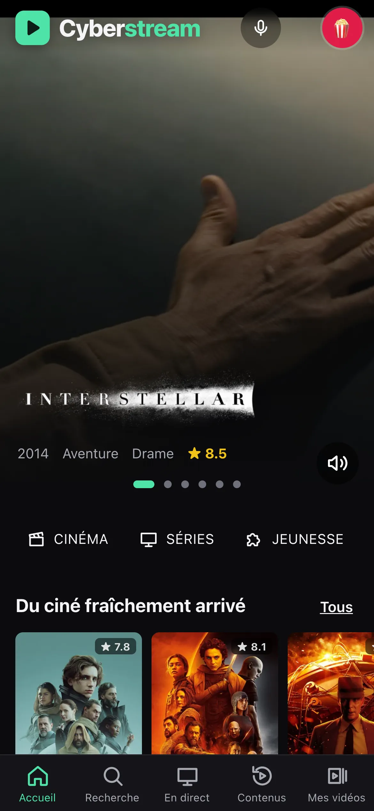

Xtream & M3U
ক্যাটালগ খণ্ডে খণ্ডে পড়া হয়, ব্যাকআপ সার্ভার, ডিফারেনশিয়াল সিঙ্ক: শুধু বদলানো সারিগুলো নতুন করে লেখা হয়।
v2.0.0 · Android ও Android TV-তে পাওয়া যায়
Cyberstream আপনার Xtream ও M3U উৎস চালায়: লাইভ চ্যানেল, টিভি গাইড, সিনেমা, সিরিজ ও ক্যাচ-আপ। একই WebAssembly মডিউল ফোন, টিভি, কম্পিউটার ও ব্রাউজারে চলে।
ডেমো উৎস ও TMDB মেটাডেটা দিয়ে রেকর্ড করা।
// 01 — বৈশিষ্ট্য
ক্যাটালগ খণ্ডে খণ্ডে পড়া হয়, ব্যাকআপ সার্ভার, ডিফারেনশিয়াল সিঙ্ক: শুধু বদলানো সারিগুলো নতুন করে লেখা হয়।
ভার্চুয়ালাইজড চ্যানেল × সময় গ্রিড, দিন ধরে নেভিগেশন, gzip ও টাইম জোন সমর্থিত। আগের অনুষ্ঠান ক্যাচ-আপে চলে।
TMDB দিয়ে সমৃদ্ধ পাতা: অভিনেতা, কালেকশন, বয়স রেটিং, সিজন ও পর্ব, যেখানে থেমেছিলেন সেখান থেকে ও পরের পর্ব।
৩০ থেকে ৬০ মিনিটের লোকাল বাফার: HLS স্ট্রিমে পজ, ±১০ সেকেন্ড ও লাইভে ফেরা, ব্যাকআপ স্ট্রিমে স্বয়ংক্রিয় বদলসহ।
“চ্যানেল ৫ চালাও”, “Dune খোঁজো”, “৩০ সেকেন্ড পিছাও”। ডিভাইসেই বোঝা হয়, ইন্টারফেসের ১৪টি ভাষায়।
টিভির কোডটি ফোন দিয়ে স্ক্যান করুন: রিমোটে URL টাইপ না করেই প্রোফাইল, উৎস ও সেটিংস চলে আসে।
ARTE, france.tv ও Okoo অন্তর্ভুক্ত, সঙ্গে YouTube RSS ফিড। সরকারি চ্যানেলের ক্ষেত্রে অফিসিয়াল স্ট্রিম আগে আসে।
SRT, WebVTT ও OpenSubtitles হ্যাশ সার্চ। Trakt স্ক্রবলিং, ওয়াচলিস্ট ও হোম স্ক্রিনে সুপারিশ।
একাধিক প্রোফাইল, প্রতিটির নিজস্ব ভাষা, অবতার ও বয়সসীমা। সার্ভিসের টোকেন ডিভাইসের সুরক্ষিত ভাণ্ডারে থাকে।
// 02 — ইন্টারফেস

// মোবাইল
ফোনে ট্যাব বার নিচে চলে যায়, সারিগুলো আঙুলে স্ক্রল হয় এবং প্লেয়ার পিকচার-ইন-পিকচার সমর্থন করে। একই APK ফোনে ইনস্টল হয় এবং Android TV লঞ্চারেও দেখা যায়।



// 03 — ইঞ্জিন
// 04 — ইনস্টল
Cyberstream-x.y.z.apk ডাউনলোড করুন।adb দিয়ে টিভিতে:adb -d install -r Cyberstream-1.0.1.apkন্যূনতম Android 7 (API 24), WebAssembly সমর্থনকারী WebView সহ। এরপর অ্যাপ নিজেই GitHub-এ নতুন সংস্করণ খোঁজে।
WebAssembly টার্গেটসহ স্টেবল Rust, Node.js 22.12 বা পরবর্তী, এবং npm।
rustup target add wasm32-unknown-unknown
cargo install --locked wasm-bindgen-cli --version 0.2.108
npm ci
cargo test --locked && npm test
npm run dev -- --host 127.0.0.1ডেভেলপমেন্টে, সাবস্ক্রিপশন ছাড়া চালিয়ে দেখতে সেটআপের সময় ডেমো উৎস বেছে নিন।
ডেস্কটপ সংস্করণ Electron ব্যবহার করে। লোকালি চালান অথবা macOS, Windows ও Linux প্যাকেজ তৈরি করুন:
npm run desktop
npm run desktop:dist